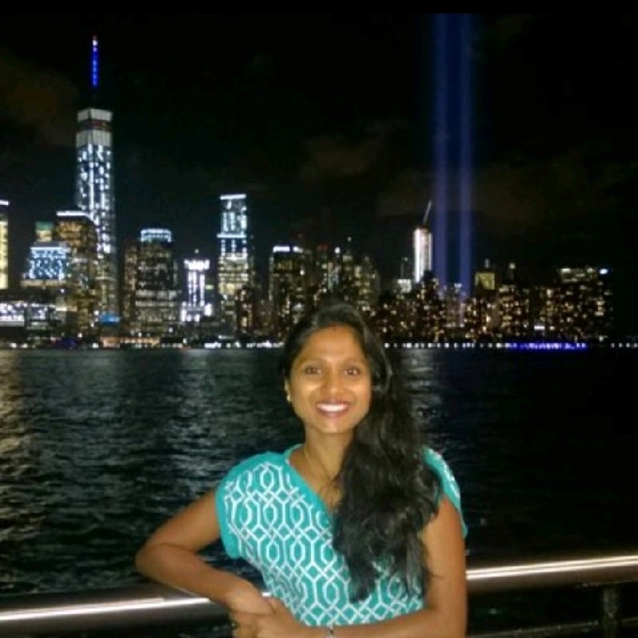

Tripti Gupta

Summary
Seeking opportunities to work after a career break
Career Hiatus
Transitioning out of a 12-year break, taken to look after my kids and
family. Fully committed and capable of returning to the workforce on a
full-time basis.
Kept myself busy with active participation in organizing kids’ school
events with the school Parent Teacher Association (PTA) and building
social relationships, which enhanced my program and event
management/planning capabilities along with MS Office suite (Excel,
Word and PowerPoint).
Recently started taking several online courses to refresh my Web Development Skills.
Work Experience
Assistant System Engineer - Tata Consultancy Services
- Assisted financial institutions, by developing and testing technology
solutions in the areas of banking and risk management.
- Assisted clients in developing migration interfaces, web pages and user
Interfaces by utilizing technology platforms such as Eclipse (JAVA/J2EE),
TIBCO, Oracle, Hibernate, Tomcat, HPQC, Richfaces and iText
- Assisted clients in drafting test cases and performing user acceptance
testing (UAT) to ensure the solutions aligned with the user requirements.
- Mentored new and junior members of the team and conducted training.
- Took active participation in various trainings to keep myself well versed with
new topics such as Informatica BI.
Lecturer - Bhagwan Mahavir Inst. of Engg. & Technology(BMIET), M.D.University, India
- Worked as a Lecturer in the Computer Science department of BMIET Engineering
College for 7 months.
- Assisted the Training & Placement department of BMIET Engineering College in
conducting campus recruitment programs.
Education
- Bachelor’s of Engineering in Computer Science from BMIET, M.D.University, India —
Sep 2003 - JUL 2007
Skills Acquired from Past Experience
- Technology Development & Testing
- Documentation & Reporting
- Mentoring/Coaching
Work Visa Status
L2 Visa Valid till 2026
Other